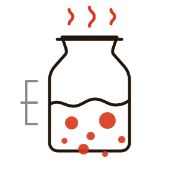

01
Refrescar la madre
Lunes, 17:00
La masa madre lleva viva desde marzo de 2019, de un bote de harina de centeno y agua de la traída. Se refresca dos veces al día con la misma harina con la que se va a hornear, para que no le cambie el carácter.
12 h hasta que triplica
